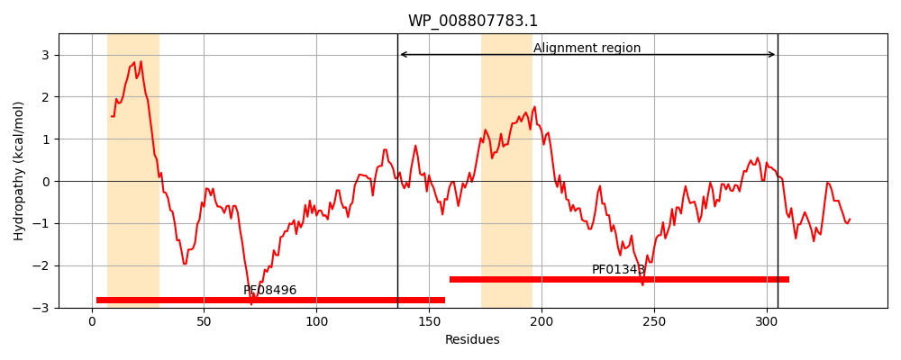
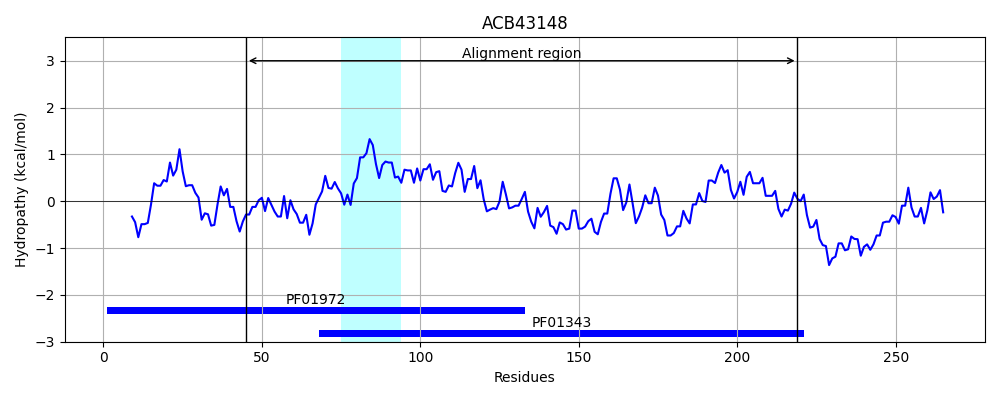
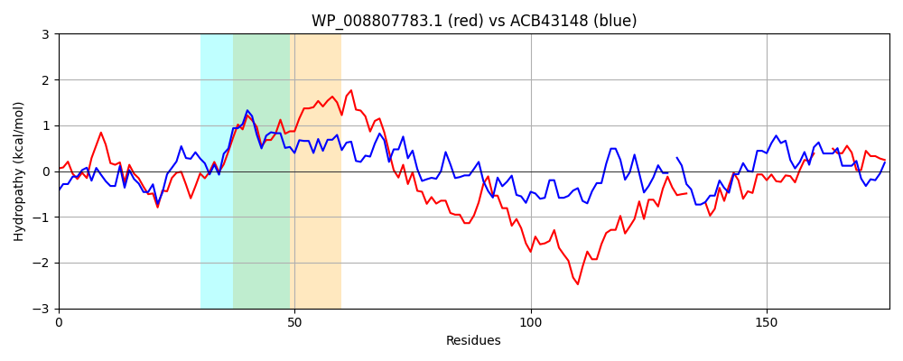

Hit Accession: ACB43148
Hit TCID: 8.A.21.2.7
Hit Description: gnl|BL_ORD_ID|1043 gnl|TC-DB|ACB43148.1|8.A.21.2.7 signal peptide peptidase SppA (protease IV) (chromatophore) [Paulinella chromatophora]
Mach Len: 176
e:0.000000
Query TMS Count : 2
Hit TMS Count: 1
TMS-Overlap Score: 0.650000
Predicted Substrates:CHEBI:14911;protein
BLAST Alignment:
Score: 181 , Bit scores: 74 bits, E-value: 3.4e-15, Alignment length: 176, Percentage identity: 32
Query: 136 VVIRLESPGGVVHGYGLAASQLQRLRDKQIPLTVAVDKVAASGGYMMACVANKIVSAPFAILGSIGVVAQIPNLHRFLKNKDIDIELHTAGQYKRTLTMLGENTEEGRRKFREDLNETHHLFKDFVHRMRPGLD---IEQVATGEHWYGVQALEKGLVDAV---ETSDELLLGLME 305
+++R++SPGG V + L RLR+K + + ++ASGG + A+KIVS P I GSIGVV + NL + L+ I E +G YK L+ + R ++ ++ +++ F + + R GL + + G + G QAL+ GLVDA+ ET+ +LL L +
Sbjct: 45 ILLRIDSPGGTVGDSQEIHAALLRLRNKGCKVVASFGNISASGGVYIGVAADKIVSNPGTITGSIGVVLRGNNLAKLLERIGIRFETIKSGIYKDILSPDRALSPAERNVLQDLIDSSYNQFVAAIAQGR-GLKESFVREFGDGRIFSGAQALDLGLVDALGDEETALQLLSQLAD 219 | Protein Hydropathy Plots: |
|---|
|  |  |
Pairwise Alignment-Hydropathy Plot:
|
|---|
|  |